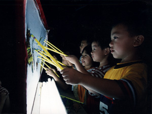
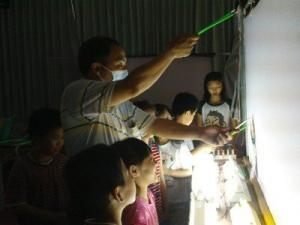

|
|
Life Stories > Story 1. The key person of creating legend – Teacher Huang
An-Jing Elementary School is located in the remote mountain area of Meishan Township. Shadow Play Group was carefully planned and formed by predecessor principal Ching-chih Chang and Teacher Tung-cheng Wu in 1995. They hired Teacher Huang to conduct the group, and made shadow play as a school characteristic. With 10 years of insistence by Teacher Huang, they reach today’s achievement. The practice ground and equipment were all very makeshift for An-Jing Elementary School Shadow Play Group. Teacher Huang has to make a 200 km round trip to come to An-Jing from Xianxi Township to teach every week. He described An-Jing Shadow Play Group as a “Legend of Mountains”. Especially in the national competition, compared to city schools, the number of students, props and resources are not as good as others. It is a surprise for them to accomplish a 4-peat in the competition. It is just like a little shrimp versus a big whale. He was born in a simple town Lugan, and was influenced by all kinds of traditional folk arts. With his persistence, he formally took shadow play master Fu-men Xu, who has won the Xinchuan award, as his teacher in 1993, and started to learn shadow puppet operations. From Teacher Huang’s first contact with shadow play, he thought this was originally a part of a kids’ childhood dream, so he became dedicated to on-campus promotion. He encouraged kids to contact this fantasy world using extracurricular activity time. Teacher Huang said, from working together for many years with An-Jing Elementary School students, he found out their learning interests including writing drama, making puppets, making backgrounds, expressing dialogues, operating puppets, and backcourt drum beating, are all very serious. This is the reason why he insists on teaching. He teaches students whatever he knows. Human kindness is full of the mountain township. Also, the support and push from Meishan Township Office and teachers in the back are some of the motivators. Teacher Huang said, to interact with kids in the mountain, he also used emails to contact and say hi to them. It is full of human kindness. The most important thing is, graduated students take the initiative to come back to help guide students during their learning process. Some parents come to learn together too. This makes him feel the hope for inheritance, and is also the important reason for him to persist. The one that affected him the most was his shadow play predecessor Fu-neng Xu. He said, Fu-neng Xu spreads shadow play all over the world through show tours, and also, the biggest contribution from him was that he broke the tradition of “do not pass on to outsiders”. Regardless of the money, energy, and physical strength he put in, he passed shadow play on to apprentices without any  reservation. In 1986 and 1991, Fu-neng Xu obtained a personal and group award of Xinchuan award from the Ministry of Education. Even still, he ran around the Bureau of Culture and Cultural Center of the entire Taiwan, and devoted to group tour shows in his old age. He would teach people whatever he knew as long as he had a chance. His purpose was to pass this skill on to next generation. This spirit impacts Teacher Huang deeply. Therefore, Teacher Huang carried the spirit from deceased shadow play master Fu-neng Xu, and paid much attention on passing on the knowledge. He hopes he can use An-Jing Elementary School as a primary axis to deliver his teachings for the Chiayi County shadow play shows. He wants to blend shadow play into classes, and carry shadow play forward in Chiayi County.2. Love to An-Jing Shadow Play … Hsing-Wu Huang accompanies and teaches for 15 years  As soon as Teacher Huang arrived at An-Jing Elementary School, students ran to him and surrounded him tightly. All students were scrambling to call out, “teacher”. He is the shadow play teacher of An-Jing Elementary School. In 1995, the An-Jing Elementary School Shadow Play Group was formed; they completed an 8-peat for nationwide shadow play competitions this year. He has already stayed in An-Jing Elementary School for 15 years. He came to the place for class and did not take students onstage to operate shadow play puppets, instead, he asked students to sit in a circle on the space in front of the stage to practice newly compiled drama. This is called “Sit on Field”. In the practice, students raised their hands and asked questions in turns. Even though they interrupted his speech, he always answered all questions patiently. After “Sit on Field”, Teacher Huang took students onstage and taught them how to operate puppets. Some students were not familiar with the puppets, so they kept complaining that it was too hard and were not willing to operate the puppets in front of the curtain. He sternly told these students: “We practice because this is hard.” Even though he loves these students, he will never spoil them. Education is his ideal job, and he loves children. He said, “Education is happy with love” For him, as long as he can see children’s smiles, he is very satisfied. Therefore, he is not afraid of hard work, and drives 100 Km from Xianxi Township, Changhua to Meishan, Chiayi to teach shadow play every week.In 1994, due to his experience in community development, the Council of Cultural Affairs invited him to take the position of Executive Manager of Overall Development Folklore Class for Meishan Township community, to develop community. His slogan by that time was “One characteristic for one village”. During the process of searching for a community characteristic, he found out An-Jing Community has a Beiguan band. In order to save this skill, and since the start of shadow play is simple; he used shadow play to merge Beiguan music. Being a qualified shadow play teacher was not enough, but he has this expertise. With his guidance, An-Jing Elementary School Shadow Play Group finally reached today’s achievement. To promote shadow play in An-Jing Elementary School, not only did he help to develop a community characteristic, he also helped to improve manners and customs. He said: “There was pole dance in temple festival in the past, and this was not good for children.” Therefore, he suggested using shadow play at An-Jing Elementary School to replace the tradition. This would help to promote education and preserve this skill. After this was executed, villagers all praised it. Having taught shadow play in An-Jing Elementary School for 15 years, he loves children and practices his ideals here. To him, An-Jing Elementary School is his second hometown. The turnover rate of teachers at An-Jing Elementary School is very high, so except for him, there are no other people who can help to carry on the shadow play skill. In order to continue the shadow play for the school, he has stayed for 15 years and has become the most senior teacher in An-Jing Elementary School. An-Jing Elementary School is located in remote mountains and nowadays, many small schools are facing dissolving destiny. Teacher Huang hopes that for the rest of his life, he can mold shadow play to be the characteristic of An-Jing Elementary School, and make An-Jing Elementary School an unshakable fortress. He also hopes to make shadow play independent through his developing ways, so that shadow play is not longer just an accompaniment to other types of drama. He was born in Lugang, Changhua where many kinds of folk arts are preserved. By its influence, he has been very interested in traditional skills since he was a little child, and among the big diversity of traditional skills, he likes shadow play the most. Since the teachers of shadow play were focused in Gaoxiong, and in order to take the related classes, he even drove very far from Changhua to Gaoxiong to take classes. Also, by his passion of Taiwanese traditional cultures, he is very assertive in cultural promotion businesses. In the early days, Hsing-Wu Huang was a senior executive in Formosa Plastic Group. Due to his passion of Taiwanese traditional cultures, he assertively devoted himself to cultural promotion business, and hence took the Secretary General position of Hsinkang foundation of Culture and Education at the same time. His efforts in developing Hsinkang community culture was noticed by the Council of Cultural Affairs, and he got the chance to go to Meishan to find his second hometown. He will continue to teach in An-Jing Elementary School until the day he cannot do it anymore. Reference: (Except the notes, the text and pictures on these pages were based on interview transcriptions, photographs and writing taken by the project team.) Note1: http://www.fromheart.com.tw/mbantreef.asp?BBanNo=K&MBanNo=K1001
|
Hsien-Hsi Junior High School, Changhua County, Taiwan |
 There are only 53 students totally in Meishan Township An-Jing Elementary School. They push shadow play with all their strength and get excellent achievements. In the nationwide competition this year, they defeated other schools, which own the best props and resources, and retained the title by performing “Weizheng cuts the Dragon King”. This is the fourth time for them to become the champions. They wrote down “legend of the mountains”, and created the legendary key person that is Teacher Huang. In the national shadow play competition held in May this year in Gaoxiong, An-Jing Elementary School performed “Weizheng cuts the Dragon King”. The 15 students insisted on using traditional Beiguan, gong, and drums to play the live music. Additionally, the students’ funny dialogue, and vivid and skillful operative skills, made all pieces of paper puppets dance lively. They once again won the favor of judges and audience, and for the fourth time, obtained first place in the elementary school upper grades group. It was a full live performance, and the judges were stunned. The principal of An-Jing Elementary School, Chen-chang Hung, said that in the process of competition, all the other teams pre-recorded dialogues and music and play for the performance. Only An-Jing Elementary School Shadow Play Group used live dialogues and music for the full performance. They also used traditional Beiguan, gong, and cymbals to accompany the performance. Judges specially ran to the backcourt to see the students. Principal Chen-chang Hung also pointed out that even though the number of students was not enough, everyone worked very hard to learn shadow play. Other than the shadow play teaching in the Arts and Humanities class of the third session every Wednesday, students needed to learn to make paper puppets, make backgrounds, express dialogues, have skills of operating puppets, build platforms, pull down platforms and drum beat in the backcourt. They often practiced plays at school using holidays and nighttime, even though props and resources were all shortcoming. However it was more solid and particularly significant for students to learn the skills under such an environment.
There are only 53 students totally in Meishan Township An-Jing Elementary School. They push shadow play with all their strength and get excellent achievements. In the nationwide competition this year, they defeated other schools, which own the best props and resources, and retained the title by performing “Weizheng cuts the Dragon King”. This is the fourth time for them to become the champions. They wrote down “legend of the mountains”, and created the legendary key person that is Teacher Huang. In the national shadow play competition held in May this year in Gaoxiong, An-Jing Elementary School performed “Weizheng cuts the Dragon King”. The 15 students insisted on using traditional Beiguan, gong, and drums to play the live music. Additionally, the students’ funny dialogue, and vivid and skillful operative skills, made all pieces of paper puppets dance lively. They once again won the favor of judges and audience, and for the fourth time, obtained first place in the elementary school upper grades group. It was a full live performance, and the judges were stunned. The principal of An-Jing Elementary School, Chen-chang Hung, said that in the process of competition, all the other teams pre-recorded dialogues and music and play for the performance. Only An-Jing Elementary School Shadow Play Group used live dialogues and music for the full performance. They also used traditional Beiguan, gong, and cymbals to accompany the performance. Judges specially ran to the backcourt to see the students. Principal Chen-chang Hung also pointed out that even though the number of students was not enough, everyone worked very hard to learn shadow play. Other than the shadow play teaching in the Arts and Humanities class of the third session every Wednesday, students needed to learn to make paper puppets, make backgrounds, express dialogues, have skills of operating puppets, build platforms, pull down platforms and drum beat in the backcourt. They often practiced plays at school using holidays and nighttime, even though props and resources were all shortcoming. However it was more solid and particularly significant for students to learn the skills under such an environment.